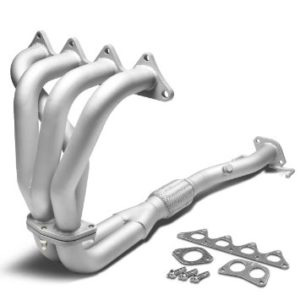
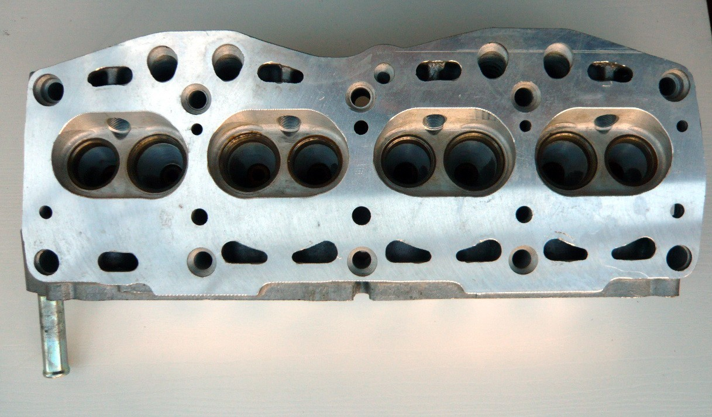
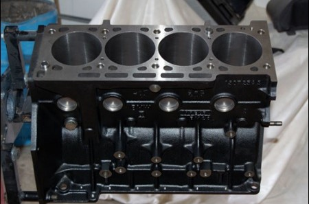
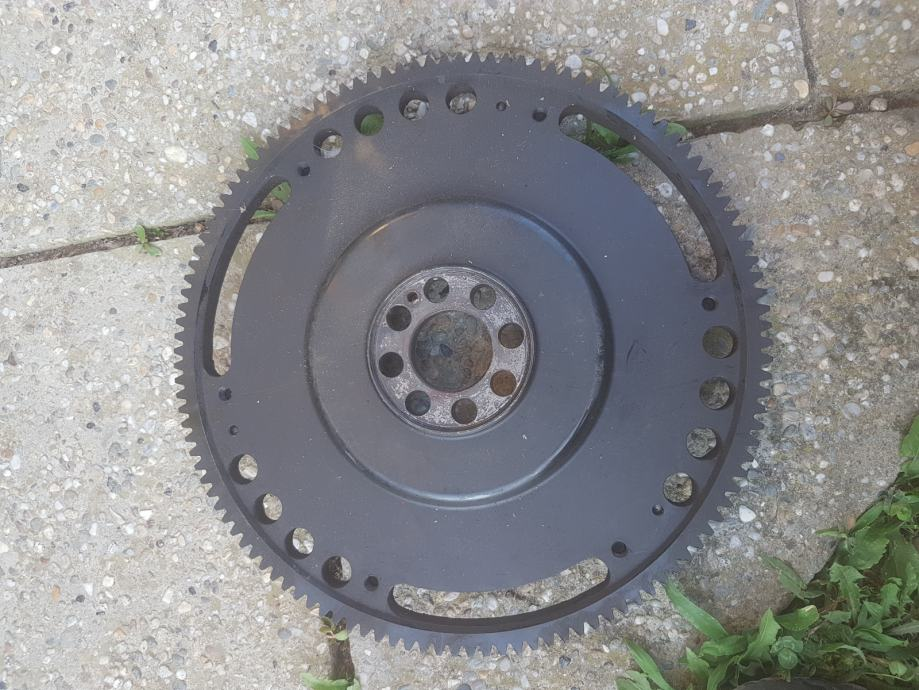

Motor
Kao i kod ostalih modifikacija na vozilima, jako je bitan vaš budžet i vaše želje. Naravno treba odretiti prioritet.
- Unapređivanje izduva
- Unapređivanje glave motora
- Kanali u glavi motora
- Spuštanje glave
- Unapređivanje ubrizgavanja
- Unapređivanje bloka motora
- Olakšan zamajac
- Unapređivanje izduva
- Osnovna modifikacija izduva je ugradnje 4-2-1 izduvne grane sa starijih modela "Zastave 101", ona omogućava
bolji protok gasova kroz izduv što je dobro za bolje "disanje" motora. Naprednije unapređivanje je samo
povećanje prečnika izduvnih cevi i pravljenje protočnih izduvnih lonaca, obično samo zadnjeg izduvnog lonca


- Unapređivanje glave motora
- Kada se unapređuje glava motora pristupa se širenju i poliranju usisnih i izduvnih kanala u glavi motora i obradi
površine koja naleže na blok motora. Glava se obično obrađuje do treće specijale i stavlja se tanji, metalni dihtung
između glave i bloka motora.

- Unapređivanje ubrizgavanja
- Unapređivanje zavisi od tipa ubrizgavanja koje auto mobil poseduje. Ukoliko je to karburatorsko ubrisgavanje, rešenje
je povećanje njegovog prečnika, stavljanje jednog ili dva dvogrla karburatora. Ali, ukoliko posedujete automobil sa EFI
ubrizgavanjem potrebno je staviti Brizgaljkukoja ima veći protok goriva.
- Unapređivanje bloka motora
- Blok motora se unapređuje razbušivanjem cilindara do treće specijale, stavljanjem većih klipova i razbušivanjem kanala za
dovod ulja do svih pokretnih delova.

- Olakšan zamajac
- Olakšan zamajac nam obezbeđuje laške okretanje radilice, zbog njegove manje mase radilica se lakše vrti, a mi to osetimo
kao bolje primanje gasa.

Odnos uloženo:dobijeno
| Unapređivanje |
Cena |
Dobijena snaga |
| Izduv |
150-250 evra |
5-10 KS |
| Glava motora |
150-500 evra |
10-15 KS |
| Ubrizgavanje |
50-150 evra |
5-10 KS |
| Blok motora |
150-400 evra |
10-15 KS |
| Olakšan zamajac |
50-100 evra |
do 2 KS |